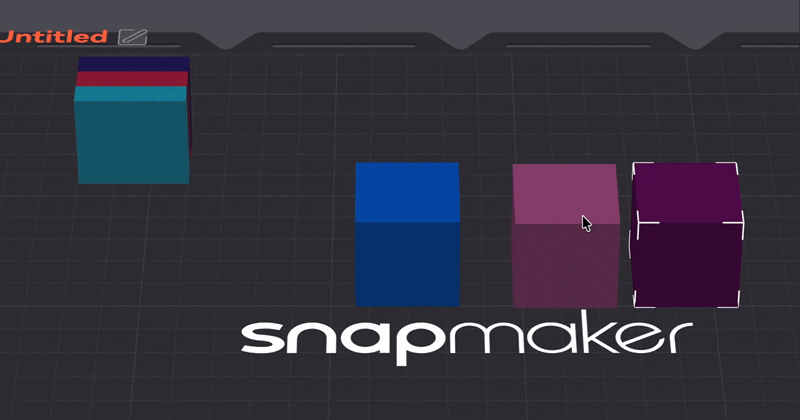
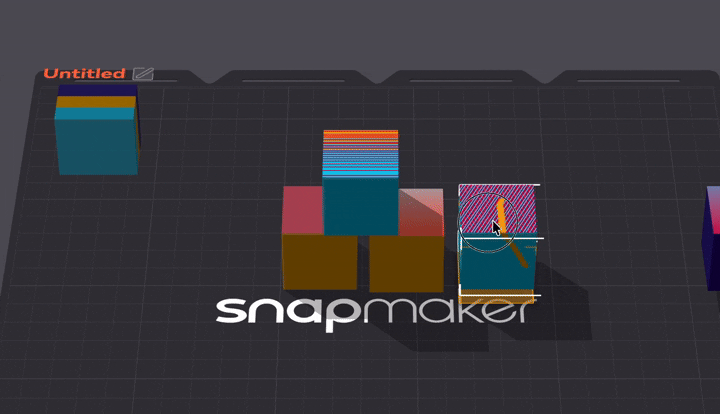
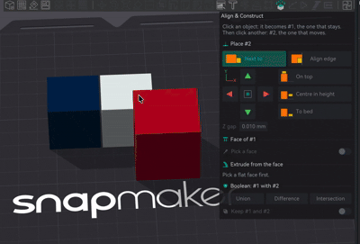
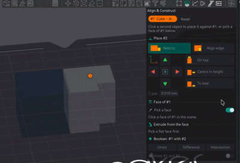
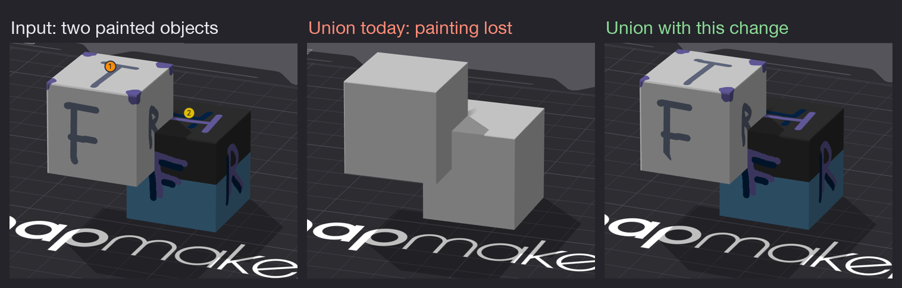
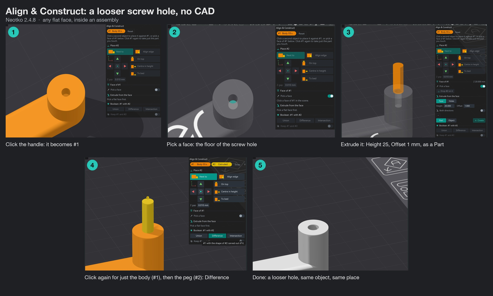
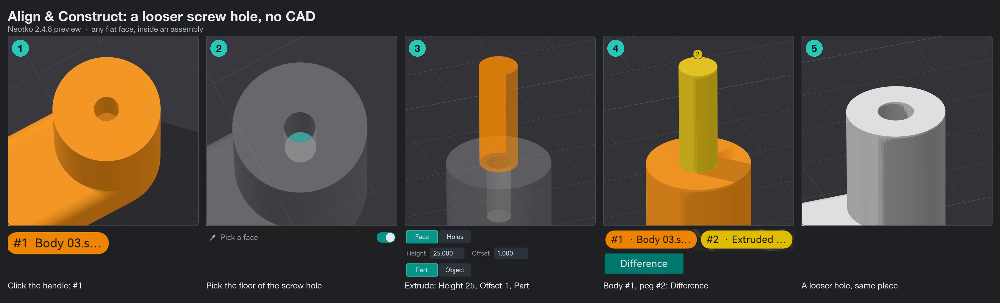

§7 · §17 — Placing
Align & Construct, and Gravity
Stock slicing assumes a few things that are only true when an object sits alone on the bed: that layer 0 is the bed, that below me is only my own previous layer, that support grows from the plate. Put two separate objects one on top of the other and all three break at once, quietly.
- True Objects
- Libre Mode opens the door
- 2.3.9, extended 2.4.0, 2.4.3 and 2.4.8
The false bridge
Put a beam on two blocks, as three separate objects. The underside of the beam is resting on solid plastic, but the slicer only ever asks "is there anything of mine underneath this?". The answer is no, so it classifies the whole face as a bridge: bridge speed, bridge fan, bridge angle, and a surface finish chosen for spanning air over a face that is touching material.
Stock
Per-object. Below layer 0 is the bed or nothing. A face resting on a neighbour is a bridge over thin air, and support gets requested under it.
With True Objects
The slicer measures what is really underneath every surface, by area, not by object. The part resting on something solid prints as contact; the part genuinely over air still prints as a real bridge, in the same layer.
Gravity, live
Drag the block around. What the slicer measures is not a raycast under your cursor: it is a 2D footprint overlap against every candidate, then a handful of real raycasts against the candidate's actual mesh. Notice what happens over the hollow box, and over the gap.
Turning it on
Where Toolbar side button›True Objects: On/Off
The button appears once the Libre Mode master switch is on, but it is its own independent axis: turning Libre Mode's active state on or off does not turn True Objects on or off, and the reverse is also true. The way to hold it in your head is that Libre Mode opens the door to the fork's pro features; True Objects decides whether things fall.
Upgrading from an older build that had Libre Mode's floating active? True Objects is seeded to match it the first time, so existing floating and stacked projects keep working exactly as they did.
| Before (stock) | With True Objects |
|---|---|
| A face resting on another object becomes a false bridge, with bridge speed, fan and the wrong angle | The same face prints as a normal solid contact surface at the correct fill angle |
| An object's own floating first layer is always solid, even over open air | The part genuinely over air becomes a real bridge |
| Perimeter overhang is measured only against this object's own layer below | Measured against the real floor, so a wall resting on a neighbour is not flagged as overhang |
| Support is requested under a face that is actually resting on another object | No support requested there; the neighbour's top counts as ground |
| Elephant-foot compensation applied to any first layer, even a stacked one | Never applied to a face that is not touching the bed, so stacked contact faces keep their true size |
| PerObject Support is opt-in per object | Forced on for every object while True Objects is active. Nothing is overwritten: turn it off and each object's own setting is as you left it |
The clearest way to see it working is an object resting partly on another and partly hanging over open air. That shows both in the same layer: solid where it is supported, bridge where it truly is not.
If your stacked pieces are already combined into one Assembled object, the slicer already sees the whole stack as one body and always did. Gravity is specifically for pieces that stay separate objects on the plate.
How it measures the floor
The stock "is it floating?" warning used a blind heuristic: an empty first layer means the object floats. That is wrong the moment an object rests on top of another one, which has an empty first layer of its own and is not floating at all.
This build measures it instead. For an object whose lowest geometry starts above the bed, each instance is checked against the bed and against the top surface of every other object's instances: real Z gap, real XY footprint, per instance. An object stacked on another no longer gets a bogus warning, and a genuinely floating island still raises one, because the old blanket suppression that could hide real floaters is gone. The tree-support sharp-tail seed uses the same check.
That detector is the shared foundation: PerObject Support and Gravity are the same geometry asking different questions.
Snap & Drag
Where The magnet icon›in the plate's icon column, under the camera
With True Objects on, dragging an object can rest it on whatever it is really above instead of leaving it floating where you dropped it. Since 2.4.3 the settings live in a small panel behind the magnet: the master switch, Snap to bed, and Move selection as one block. It stays open while you work.
Before 2.4.3 these lived in an object's right-click menu, which meant they were only reachable for the selection that produced that particular menu. Select several objects and they simply were not there, which is exactly when they matter most. The magnet does not depend on the selection, so the problem is gone rather than patched.

How it decides where to land
Detection is by 2D footprint overlap, not a raycast under the cursor, so a corner that only barely overlaps a pillar is not treated as resting on it. The overlap has to clear a threshold before it engages, and a slightly lower one to stay engaged once it has. That hysteresis is what stops the object flickering up and down as you drag near a pillar's edge.
Once a candidate qualifies, its landing height is sampled with a handful of real raycasts against the candidate's actual mesh, not its flat bounding-box top. A hollow box with a tall rim and a low interior floor resolves correctly depending on where the overlap lands, instead of always reporting rim height. If several candidates qualify, the object rests on the highest real surface under it. If an object has more than one instance and they would land on pillars of different heights, the whole object uses the lowest of those targets, so one instance landing on something tall never silently drags the others up with it.
The landing indicator 2.4.0
While a drag is engaged the object hovers a little above its landing spot rather than sitting flat on it, so what is underneath stays visible, and that gap is filled with the evidence behind the decision:
- the corner marks of the box where the object will come to rest;
- the recognised zone, the exact patch being read as the height, highlighted on the surface it was found on;
- a translucent column between that zone and the object's underside;
- the sample points the height was actually taken from, as fat dots at their real hit heights;
- colour: cyan when another object caught you, amber when the plate did.
None of this takes part in the calculation. It is what makes aiming possible: when a large part refuses to catch a thin rim, the dots show you that the samples went through the opening instead of onto the rim.

Does the plate count?
By default yes. Switch Snap to bed off and only other objects can catch you: an object with nothing underneath keeps floating exactly where you dropped it, which is what you want while assembling something in mid-air. The plate never competes with a real object, because it is simply a floor of height zero and the highest surface under your footprint always wins.
This is the option that was called Snap & Drag: Allow Bed in 2.4.0–2.4.2. Same setting, same default, new home. With it off and nothing qualifying underneath, the object is left exactly where it is, so Snap & Drag only ever pulls something down onto a floor it actually finds. That keeps True Objects' "nothing auto-drops" promise.
Dragging several at once
By default a multi-object selection is resolved by stacks. Anything standing on another member of the same selection travels with it and keeps its exact relative height; anything with nothing of its own underneath resolves its own floor and falls independently. Pick up a stack of three plus a loose box, move them together, and the stack lands intact while the loose box drops to the plate, in the same drag. Two objects count as stacked when one overlaps the other's footprint and sits within about a millimetre of its top, so hand-built stacks that were never seated perfectly still hold together.
Sometimes that independence is the wrong answer: you are not placing parts, you are carrying an arrangement somewhere else and it has to arrive unchanged. Tick Move selection as one block and the whole selection becomes one rigid body. Nothing changes height relative to anything else, and the block falls until its first part meets a surface, then stops. Nothing is ever pushed through its own floor to make some other part land.
It is off by default, because parts falling independently is what Snap & Drag is for most of the time and it is what every earlier version did. The option only affects selections of more than one object or instance; a single object is a rigid body all by itself.
Align & Construct
Where Top toolbar›Align & Construct
Snap & Drag is for placing by hand. Align & Construct is for placing exactly, and since 2.4.8 it also builds: it extrudes a face into a new solid and runs booleans between two objects, or between two parts of the same object. It used to be called Align & Stack and it used to need Libre Mode. It does not any more: everyone has it.
| Job | What it does |
|---|---|
| Place #2 | Puts one object or part against another: next to it, on top, centred, or with an edge lined up. |
| Face of #1 | Pick a flat face of #1 and drop #2 on it. |
| Extrude from the face | Turns any flat face into a new solid, grown or shrunk around its outline. |
| Boolean | Union, Difference or Intersection of #1 with #2, without assembling them first. |
Picking #1 and #2, and parts
Click an object and it becomes #1, the one that stays. Click another and it is #2, the one that moves. Swap trades them. In an assembled object the first click takes the whole object; click it again and you get just the part under the mouse, and the rest of the assembly turns see through so the part stands out. #1 and #2 can be two parts of the same object. What you picked gets a layer of its colour: orange for #1, yellow for #2.
Place, and see where it lands
The pad is the bed seen from above: four arrows that follow the bed axes (red is X, green is Y) and a centre button. Three more buttons handle height: On top, Centre in height and To bed. Next to leaves #2 beside #1, touching it; Align edge lines up the edge on that side.
Hover any of those buttons and #2 shows up as a ghost where it would land, with a dotted line to a target mark. The line and the mark keep their size on screen, so a 3 mm part reads as easily as a big one. Click, and it lands exactly there.

Extrude from the face
Turn on Pick a face and click a flat face of #1. It lights up whole, holes included. Any flat face works, at any angle, and the new solid grows straight out of it.
- Face extrudes the face as it is. Holes extrudes only its holes, filled: pick the flat face around a screw hole and you get the plug of that hole.
- Height is how thick the new solid is, 5 mm to start. Offset grows its outline, or shrinks it with a negative value.
- Both directions puts half the height out of the face and half into the model, so the new solid passes through the face. Handy as a cutter for a boolean.
- Part keeps it inside the same object, in place. Object makes a separate one. Create does it, and one undo removes it.

A real use: a 0.05 mm sheet of white over the stickers of a keyring, to soften very opaque matte colours. It used to mean going back to the CAD program. Now it is a click on the top face. The new solid is a plain mesh, so if you change the model afterwards, make it again.
Boolean: #1 with #2
Union joins them, Difference carves the shape of #2 out of #1, and Intersection keeps only what they share. Two separate objects give a new object in the same place; two parts of the same object give a part of that object, in place, so the assembly stays together. With Keep #1 and #2 off, the result replaces both. If they do not overlap, or one is not a closed solid, it tells you and leaves the scene alone.
Since 2.4.8 the result keeps the painting, here and in the Mesh boolean tool and in Split › To Parts / To Objects. Every stroke stays where it was (colour, fuzzy skin, support and seam painting), and the skin you never painted keeps the filament of its own part. #1 gives the base filament, the one that fills the inside: in a Union, pick the big part as #1. In a Difference, the walls of the cut take the base filament.

On a big painted model it takes a few seconds, and a small window says Keeping the painting... while it works. Measured: a 218k triangle sea slug with all its skin painted merges in about 9 s and slices to the same G-code as the assembled one, 0.06 g apart. ColorStitch recipes, Texture Bump zones and stickers do not carry over yet.
Example: a looser hole for a screw
A downloaded cabinet handle whose screw holes come out too tight. No CAD needed: extrude a wider peg from the floor of the hole, then subtract it.
- Open Align & Construct and click the handle. It becomes #1.
- Turn on Pick a face and click the floor of the hole. The rest of the model turns see through, so you can see inside it.
- In Extrude from the face, set Height 25 and Offset 1, keep Part and press Create. A peg 1 mm wider all round appears inside the hole.
- Click the handle again to take just its body as #1, then click the peg: #2. Press Difference.
- The handle comes back as one part with a wider hole, in its place.


| Changed from Align & Stack | Now |
|---|---|
| To bed | Drops #2 only. It used to drop every object you had picked. |
| Centre | Centres #2 on #1 in X and Y together. |
| On top | Leaves #1 where it is. The "#1 to bed first" checkbox is gone. |
| Libre Mode | Not needed. A whole object you lift up still drops to the bed without it, as everywhere else in Orca; a part moves inside its own object. |
Align & Construct places the pieces exactly. Gravity is what then makes the slicer treat the touching face honestly instead of as a false bridge.
Stacked objects: real layers
Where Prime tower›Tower type: NeoTower›Variable layer height›Stacked objects: real layers
A slicer lays every object on one grid of layers that starts at the bed. A part resting on top of another one starts wherever that grid happens to fall, up to half a layer above or below the surface it sits on. Above, you get an air gap and the first layer prints as a bridge. Below, it digs into the part underneath. And the part underneath has the same problem at its top: a 2.3 mm part at 0.2 stops at 2.25, so whatever sits on it hangs 0.05 in the air.
The usual trick was nudging the layer height by a few hundredths until a boundary landed in the right place. It worked until you moved or resized anything. With this box ticked:
- A part that does not touch the bed starts its layers at its own base. The empty stretch under it is split into equal layers that end exactly there; nothing prints in it.
- From its base up, the part uses its real layer height. 0.2 stays 0.2.
- A part with something resting on its top prints up to its real height. Its last five layers change by a few hundredths to get there. The first layer is never touched.
- It follows the scene: put a part on top, take it off or move it, and the parts involved are sliced again.
- Off by default. It only shows with NeoTower and Variable layer height, which is what lets the tower follow objects whose layers sit at different heights. It also needs Libre Mode and parts resting on other parts.
- It adjusts the top of a part, its highest point. Something resting on a lower step is not covered yet.
- A sheet with nothing on top of it still needs its own Layer height.
- "Conflicts of G-code paths" can show up when stacked parts use different layer heights. If the G-code preview looks right, it is right.
The catch
- Support does not land on other objects yet. It still grows from the bed or from the object's own body. Landing on the top of a neighbour is a future extension.
- Auto-arrange does not know about your stack. It can scatter a hand-placed arrangement across the plate, because it has no concept of "these are meant to stay stacked". Do not run it after stacking by hand.
- By-layer printing only. In sequential by-object printing a neighbour may not exist yet at a given height, so nothing is treated as floor there.
- Snap & Drag is vertical only. It detects downward, so it does not help with side-by-side mating inside Assemble View, which has no single "down".
- No chaining outside the selection. Moving an object that something else is resting on does not drag that object along. Only things picked up together move together.
- The magnet icon appears in Libre Mode only, and only on the Prepare plate.